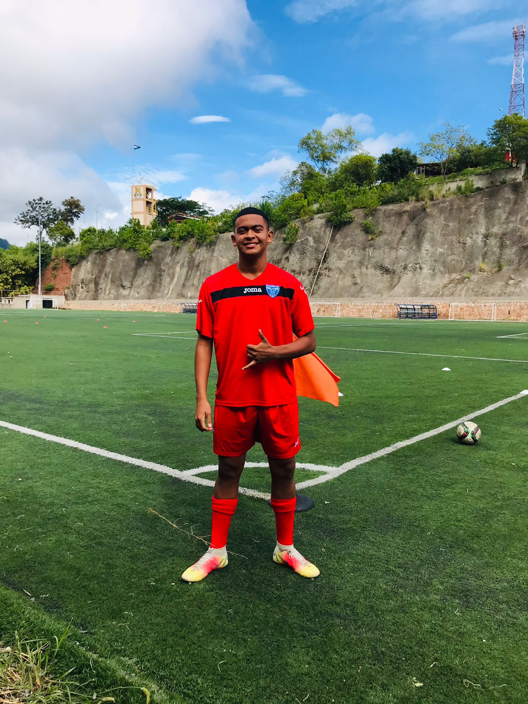
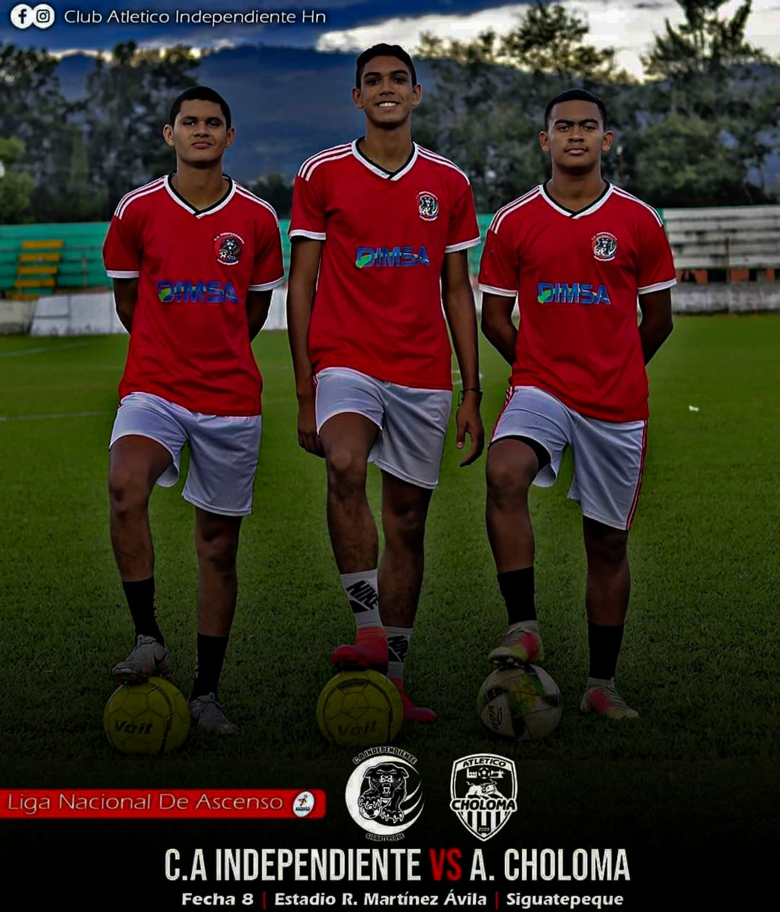

Pertenezco al club deportivo atletico independiente de la ciudad de Siguatepeque, que participa en la liga de segunda division de nuestro pais.
El Atlético Independiente fue fundado el 12 de octubre de 1960 por Luis Méndez y Julio Zepeda. El club originalmente jugó en la Liga de Fútbol “Amado Sánchez”, una liga independiente en Siguatepeque, hasta 1979, cuando el club fue ascendido a Segunda División (ahora llamada Liga de Ascenso).
Desde ese año, Independiente es uno de los clubes más conocidos y respetados de la Liga de Ascenso. El club ha estado cerca de ascender a la Liga Nacional de Honduras en muchas ocasiones, la más cercana fue en 1990, donde perdió un partido de playoffs de la final ante Tela Timsa.


|